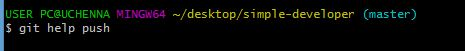
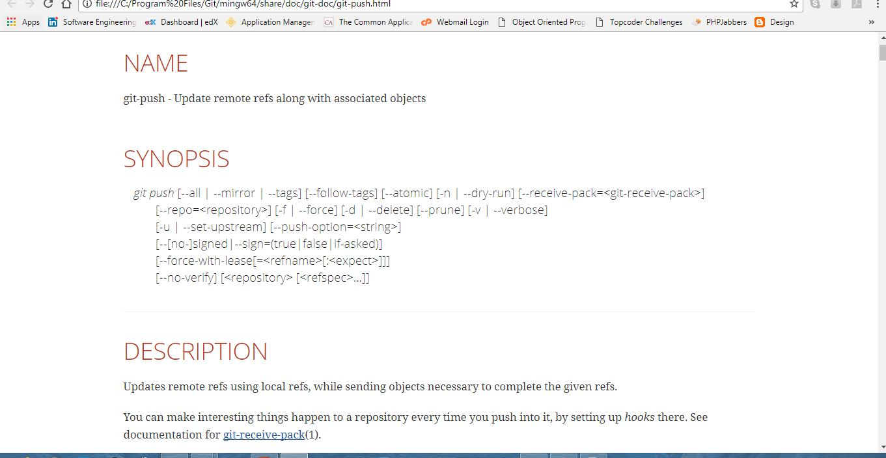
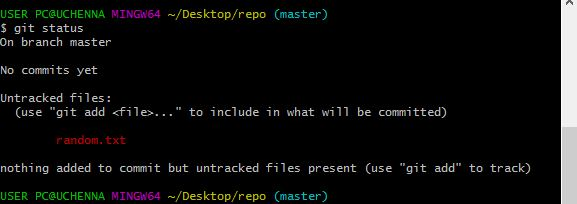

This tutorial is useful for
- Those who haven’t used version control before
- Those who have used git GUI but not command line
Git is a type of version control system called Distributed version control system
Before we begin
- Register for Github here
- Download GIT here.
After you have installed git, check the version using this command
git --version
The following will appear

Once the version appears it means it was installed correctly.
Now, we need to set up some global configuration variables. This way, if you are working with other developers, they get to see who is making the changes.
To add your full name to the config type in
git config --global user.name "full name"
To add your email
git config --global user.name "email"
To view details type
git config --list
Here's an illustration

Getting help
If you need help with any of the syntax and want to know more about it, Use:Git help "verb"
For example when I typed this

I saw this 
Some common operations we'll be working with are:
- Git status
- Git add
- Git pull
- Git push
- Git log
Tracking a local project
A local project is a project on our system. It could be a calculator we are trying to build or a new algorithm we are trying to perfect, as long as it's on our system, it's a local project
To begin:
- Go to the file directory of your choice project
- Right-click
- Then click on [git bash here]
Once the terminal opens type git init
You'll notice, ".git/" has been added to the file path.

Note : if we want to stop tracking the project, we type rm –rf .git
This removes the git directory, thus we will no longer tracking the project.
Creating a file from the command line
Now with our repository initialized, lets create some files in the directory/ repository. To do this we create a file named random.txt by typing touch random.txt (We can also manually create a file).Let’s see if the file is in our directory.
Type
ls –la to view the entire files in your directory.
Here's what i got

Now let's do a demo
We have previously created a file named random.txt. Let's see if it's being tracked. Typegit status to check.

From the above image, random.txt is not yet tracked (it is colored red).
Now to begin to track this file, let's add it to the staging area.
We enter git add random.txt to do this
It has turned green meaning it is ready to be commmited.
To commit we type
git commit -m "Our first commit"

Now we do not have modified and untracked files. Hence we have commited changes to the local directory After a few practices, you will be ready to learn how to track an existing project on github